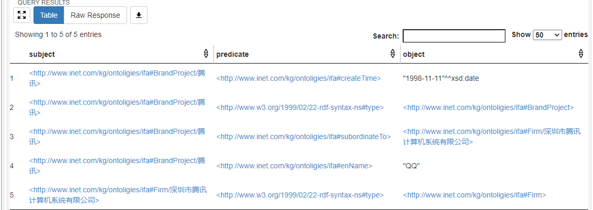

Insert data
This section takes you step-by-step through converting the resulting data into RDF form and inserting it into Jena.
Sync insert¶
Step 1: Instantialize FusekiUpdate¶
from pyfuseki import FusekiUpdate
fuseki_update = FusekiUpdate('localhost:3030', 'test_db')
Step 2: Prepare your data¶
Suppose we have the following data to insert when curling "Tencent" :
rev_data = {
'band_project': '腾讯',
'所属企业': '深圳市腾讯计算机系统有限公司',
'成立日期': '1998-11-11',
'英文名称': 'QQ'
}
Step 3: Create a graph object¶
When you call the interface to insert the data, you need to use the Graph object from the rdflib library and store the data you want to insert into it. So we need to import the rdflib library and create a 'Graph' object:
from rdflib import Graph
g = Graph()
Step 4: Encapsulate data¶
Each data needs to be encapsulated in the form of RDF triples, and each type corresponds to the type of OWL ontology in order to realize the deduction of Jena inference machine.
The ontology mapper which be defined before will play an important role.
Here we use already written mappings and encapsulate the data as triples.
from pyfuseki.ontology_mapper import rdf_prefix, BaseRdfPrefixEnum
from rdflib import Namespace
from pyfuseki import config
@rdf_prefix
class RdfPrefix(BaseRdfPrefixEnum):
BrandProject = Namespace(config.COMMON_PREFIX + 'BrandProject')
Firm = Namespace(config.COMMON_PREFIX + 'Firm')
from ... import RdfPrefix
tencent = RdfPrefix.BrandProject.val('腾讯')
Here, we encapsulate the brand project "Tencent" into URIRef form, that is, 'Tencent' variable is a URIRef type object.
By analogy with the above encapsulation method, we can encapsulate all previously owned data rev_data and put it into a encap_data_dict :
from rdflib import Literal, XSD
from ... import ObjectProperty as op
from ... import DataProperty as dp
encap_data_dict = {
op.subordinateTo.value: FirmRdfPrefix.Firm.val('深圳市腾讯计算机系统有限公司'),
dp.createTime.value: Literal(rev_data['成立日期'], datatype=XSD.date),
dp.enName.value: Literal(rev_data['英文名称'], datatype=XSD.string)
}
Step 5: Insert data into graph¶
With the data encapsulated above, we are ready to transfer it into graph.
from pyfuseki import RdfUtils
RdfUtils.add_dict_to_graph(g, tencent, encap_data_dict)
In addition, you can use the add_list_to_graph function provided in RDFUtils or even the simpler g.add() method to insert data into the graph.
# add_list_to_graph() method
g = Graph()
tencent = rp.BrandProject.val('腾讯')
spo_list =[
(tencent, URIRef('http://www.ifa.com#hasName'), Literal('腾讯', datatype=XSD.string)),
(tencent, URIRef('http://www.ifa.com#hasApp'), URIRef('http://www.ifa.com#App/wechat'))
]
add_list_to_graph(g, spo_list)
# g.add() 插入方案
g = Graph()
tencent = rp.BrandProject.val('腾讯')
g.add((tencent, URIRef('http://www.ifa.com#hasName'), Literal('腾讯',datatype=XSD.string)))
Select the most suitable data addition scheme according to the application scenario.
Step 6: Insert graph into Jena¶
After you've finished transferring the encapsulated data into graph, you can insert the data into Jena Fuseki using graph as a staging point:
fusekiUpdate.insert_graph(g)
View the results¶
Open localhost:3030 in a browser and execute the following SPARQL statement on the corresponding dataset page to see the insert result:
SELECT *
WHERE { ?subject ?predicate ?object };
The insertion is successful if you can see the following result screen:

The complete code¶
from pyfuseki import FusekiUpdate
import pyfuseki
from pyfuseki.utils import RdfUtils
from rdflib import Graph, Literal, XSD
from demo.RdfPrefix import RdfPrefix as rp
from demo.properties import ObjectProperty as op, DataProperty as dp
pyfuseki.register.register_common_prefix("http://www.yubin.com/kg/")
fuseki = FusekiUpdate('http://localhost:3030', 'pyfuseki_db')
g = Graph()
# RdfUtils.bind_prefixes_to_graph(cls.g, [rp.BrandProject, rp.Firm]) # 绑定前缀
# 假设获取的数据为rev_data
rev_data = {
'band_project': '腾讯',
'所属企业': '深圳市腾讯计算机系统有限公司',
'成立日期': '1998-11-11',
'英文名称': 'QQ'
}
# 将rev_data转化成RDF三元组并加入graph中
tencent = rp.BrandProject.val('腾讯')
RdfUtils.add_dict_to_graph(g, tencent, {
op.subordinateTo.value: rp.Firm.val('深圳市腾讯计算机系统有限公司'),
dp.createTime.value: Literal(rev_data['成立日期'], datatype=XSD.date),
dp.enName.value: Literal(rev_data['英文名称'], datatype=XSD.string)
})
print(g)
# 将graph插入
fuseki.insert_graph(g)
Async insert¶
The overall process is similar to that of synchronous mode. All you need to do is replace FusekiUpdate with AsyncFuseki.
from pyfuseki import AsyncFuseki
import pyfuseki
from pyfuseki.utils import RdfUtils
from rdflib import Graph, Literal, XSD
from demo.RdfPrefix import RdfPrefix as rp
from demo.properties import ObjectProperty as op, DataProperty as dp
import asyncio
async def insert_test():
pyfuseki.register.register_common_prefix("http://www.yubin.com/kg/")
fuseki = AsyncFuseki('http://localhost:3030', 'pyfuseki_db')
g = Graph()
# RdfUtils.bind_prefixes_to_graph(cls.g, [rp.BrandProject, rp.Firm]) # 绑定前缀
# 假设获取的数据为rev_data
rev_data = {
'band_project': '腾讯',
'所属企业': '深圳市腾讯计算机系统有限公司',
'成立日期': '1998-11-11',
'英文名称': 'QQ'
}
# 将rev_data转化成RDF三元组并加入graph中
tencent = rp.BrandProject.val('腾讯')
RdfUtils.add_dict_to_graph(g, tencent, {
op.subordinateTo.value: rp.Firm.val('深圳市腾讯计算机系统有限公司'),
dp.createTime.value: Literal(rev_data['成立日期'], datatype=XSD.date),
dp.enName.value: Literal(rev_data['英文名称'], datatype=XSD.string)
})
print(g)
# 将graph插入
await fuseki.insert_graph(g)
if __name__ == '__main__':
asyncio.run(insert_test())